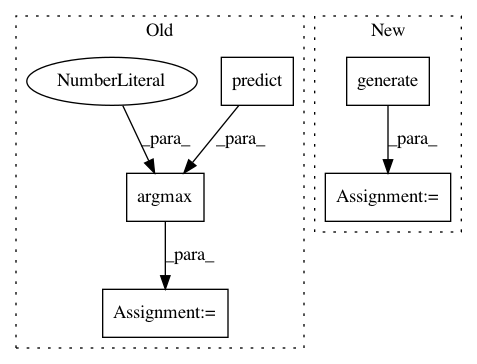

07ebba0b5978711bf60c9502766b1f3f6f62ce78,art/attacks/spatial_transformation_unittests.py,TestSpatialTransformation,test_krclassifier,#TestSpatialTransformation#,108
Before Change
// x_test_adv = x_test + up.v
// self.assertFalse((x_test == x_test_adv).all())
train_y_pred = np.argmax(krc.predict(x_train_adv), axis=1)
// test_y_pred = np.argmax(krc.predict(x_test_adv), axis=1)
// self.assertFalse((np.argmax(y_test, axis=1) == test_y_pred).all())
self.assertFalse((np.argmax(y_train, axis=1) == train_y_pred).all())
After Change
self.assertTrue(attack_st.attack_trans_y == -3)
self.assertTrue(attack_st.attack_rot == -30.0)
x_test_adv = attack_st.generate(x_test)
self.assertTrue(abs(x_test_adv[0, 14, 14, 0] - 0.6941315) <= 0.01)
def test_ptclassifier(self):
In pattern: SUPERPATTERN
Frequency: 3
Non-data size: 5
Instances
Project Name: IBM/adversarial-robustness-toolbox
Commit Name: 07ebba0b5978711bf60c9502766b1f3f6f62ce78
Time: 2019-01-22
Author: beat.buesser@ie.ibm.com
File Name: art/attacks/spatial_transformation_unittests.py
Class Name: TestSpatialTransformation
Method Name: test_krclassifier
Project Name: IBM/adversarial-robustness-toolbox
Commit Name: 07ebba0b5978711bf60c9502766b1f3f6f62ce78
Time: 2019-01-22
Author: beat.buesser@ie.ibm.com
File Name: art/attacks/spatial_transformation_unittests.py
Class Name: TestSpatialTransformation
Method Name: test_tfclassifier
Project Name: IBM/adversarial-robustness-toolbox
Commit Name: 07ebba0b5978711bf60c9502766b1f3f6f62ce78
Time: 2019-01-22
Author: beat.buesser@ie.ibm.com
File Name: art/attacks/spatial_transformation_unittests.py
Class Name: TestSpatialTransformation
Method Name: test_ptclassifier